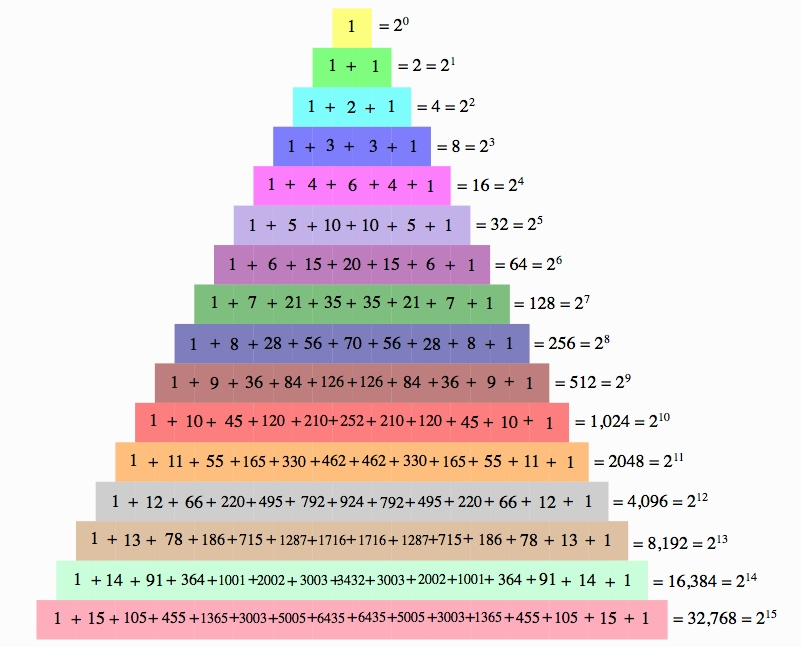
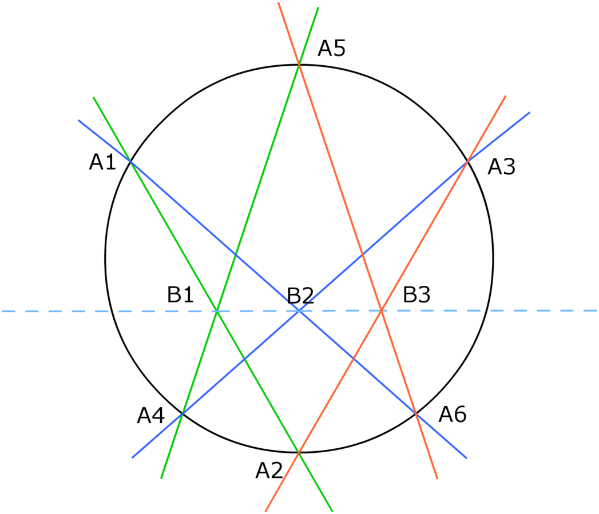

Blaise Pascal
Blaise Pascal
Blaise Pascal provided many theories for mathematics, some of which are still acknowledged today.
Pascal's Triangle: Though Pascal was not the first to discover the pattern of numbers named after him, he did write "Treatise on the Arithmetical Triangle." The triangle shows binomial coefficients. Each number is calculated by the sum of the two numbers directly above it. In addition, the numbers in each diagonal demonstrate the Fibonacci Sequence. The numbers and patterns included within the triangle provide information for the probability of multiple events with two outcomes each. The powers of 2, along with square numbers, triangular numbers, and the digits of powers of 11 can all be found within various patterns of the triangle.
Pascal's Calculator: Pascal built one of the world's first calculating devices, also referred to as the "Pascaline." His intention with this invention was to assist his father in his work as a tax collector. The compact machine could add, subtract and multiply or divide by using repeated addition and subtraction patterns. The machine had 5 to 8 wheels (the number evolved as Pascal improved the machine) with the numbers 0-9 included. A stylus was used to turn to the appropriate numbers. The answer was given at the top of the box.

Pascal's Theorem: Though Pascal was brilliant in many subjects areas, even within mathematics, his interest lay in geometry. At the age of 16, Pascal published his "Essay on Conics," and was influenced by Desargues and Descartes. Within this essay, his theorem, the "Mystic Hexagram," explains that within a conic section, if a six-sided figure is inscribed and then extended, the pairs of opposite sides will meet in 3 points that are collinear.
Theory of Probability: Pascal and fellow mathematician Fermat exchanged letters in order to discuss probability. One such problem they discussed was the dice problem, where they calculated how many chances it should take until one should expect to roll a pair of 6's. Another problem was the point problem, which discussed how stakes should be divided if a certain two-player game, involving two players, is interrupted. Fermat and Pascal went back and forth on possible solutions, but Pascal eventually created a process. He believed that the stakes should be equally divided based on the rounds played before the interruption. Then, from there, he reasoned that an imaginary round should be taken into account as well. The stakes for the imaginary round should be divided equally among the two players because both have an equal chance for winning. This allowed stakes to be more fairly decided for games with fewer rounds.